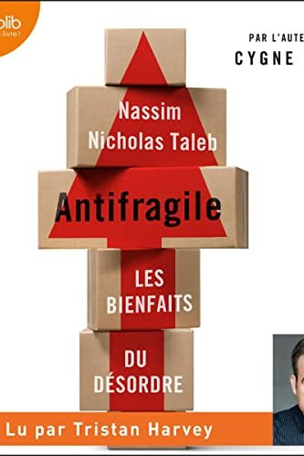

Why Did Greensill Capital Fail?
$7B 'Boring Finance' Built on One Fragile Customer
📜 What Happened
Lex Greensill turned supply-chain finance — the world's most boring business — into a $7B fintech with a private jet fleet and David Cameron as advisor. The engine: packaging invoices into funds Credit Suisse sold as 'safe as cash.' Hidden inside: massive concentrated exposure to one client, steel magnate Sanjeev Gupta — including lending against 'future receivables' from customers that didn't exist yet. When its insurer refused to renew ONE policy, the whole tower lost its 'safe' label overnight and collapsed in a week.
☠️ The Fatal Mistake
A 'diversified' empire secretly balanced on one borrower and one insurance policy — complexity dressed up as safety.
🧠 The Lesson (Free for You)
Ask any 'safe' investment two questions: what exactly am I owed, and by whom? If the answer takes a diagram, the safety is the product being sold to you — not a property of the thing.
📕 The Antidote Book

There is no word for the opposite of fragile — so Taleb invented one. Fragile things break under stress (a teacup); robust things resist it (a rock); ANTIFRAGILE things get BETTER from it (muscles, immune systems,…
📖 OPEN THE FULL INTERACTIVE BREAKDOWN →Searchable, filterable, free forever — they paid billions; your lesson is free.